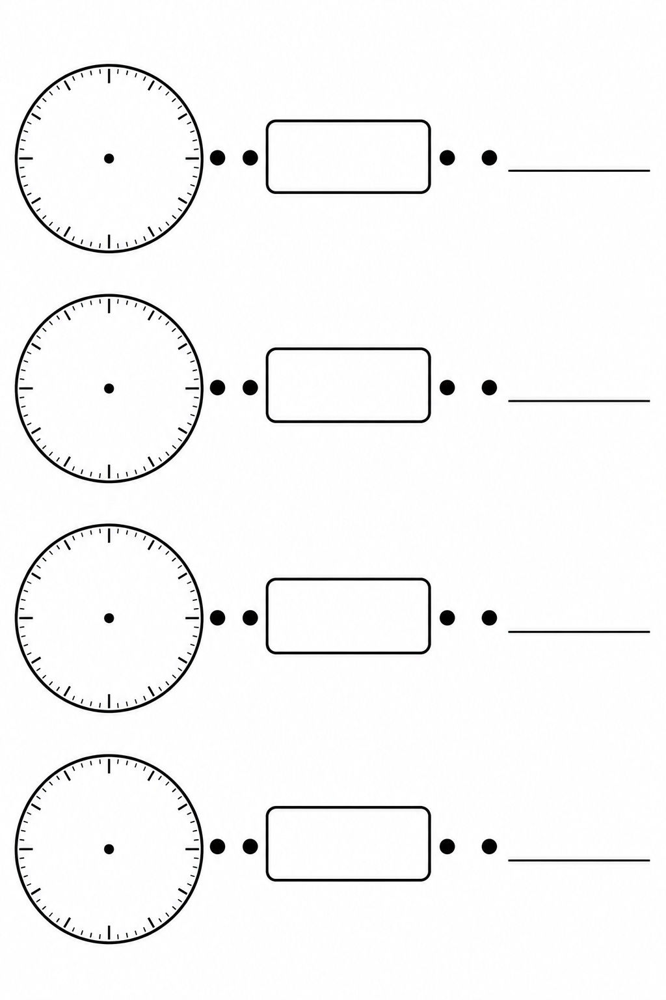
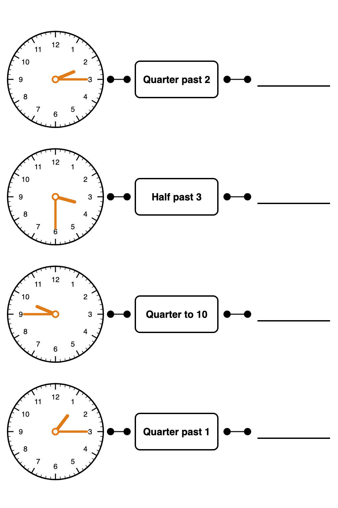
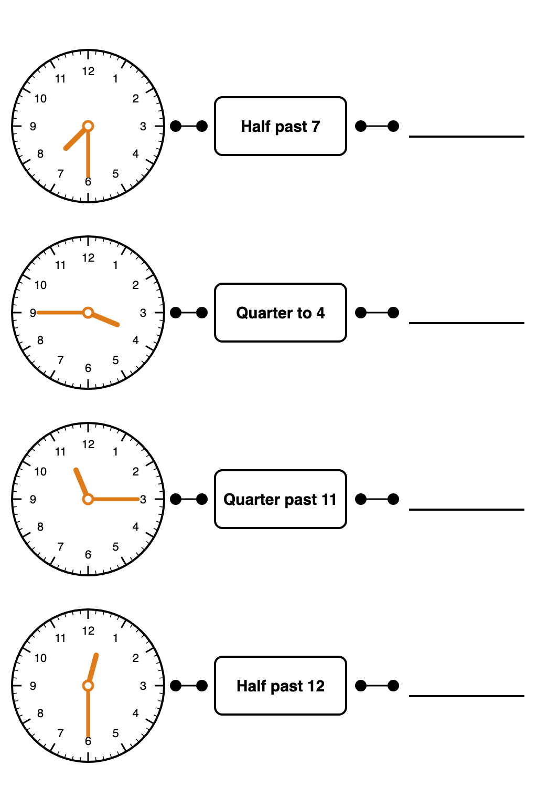
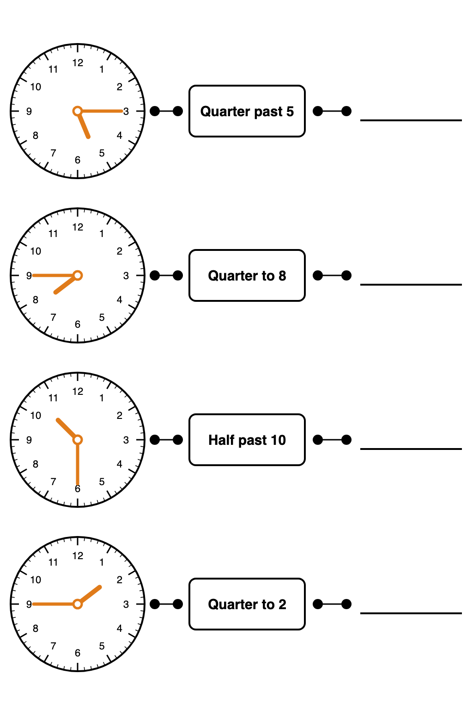

A template for teachers to model analog to digital time mapping with Year 2 students.
Objective: Reading and writing quarter past, half past and quarter to on analog and digital clocks

Four rows, each with a clock face, a box for the time in words, and a line for the digital time. Print it or put it on the board.
Download blank templateWork through one time at a time with the class:
Give each student a copy of the template. Call out a time, or show one on a clock, and have them fill in all three parts of a row before checking together.

Quarter past, half past and quarter to, with the hands drawn and the words filled in. The digital time is left blank for students to complete.
Download #1
A second set with the hands drawn and the words filled in, but the digital time left blank for students to complete.
Download #2
A third set: quarter past 5, quarter to 8, half past 10 and quarter to 2. Two quarter to times, so students get more practice with the hour hand sitting just before the next number.
Download #3{kind=link}
{kind=link}
{kind=link}
{kind=link}